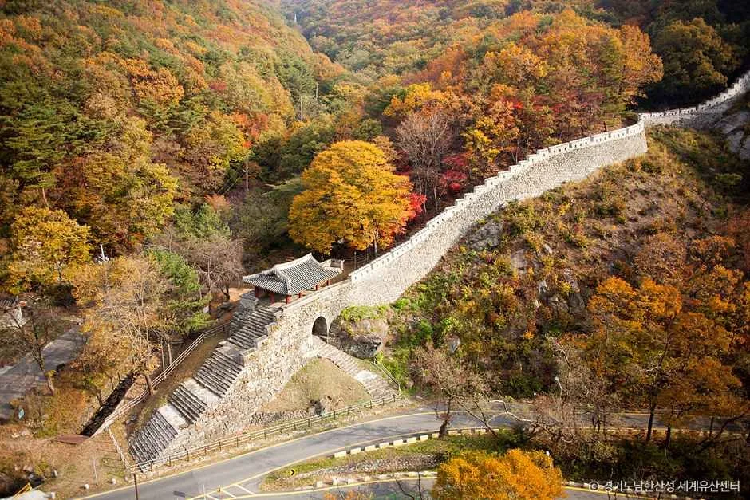
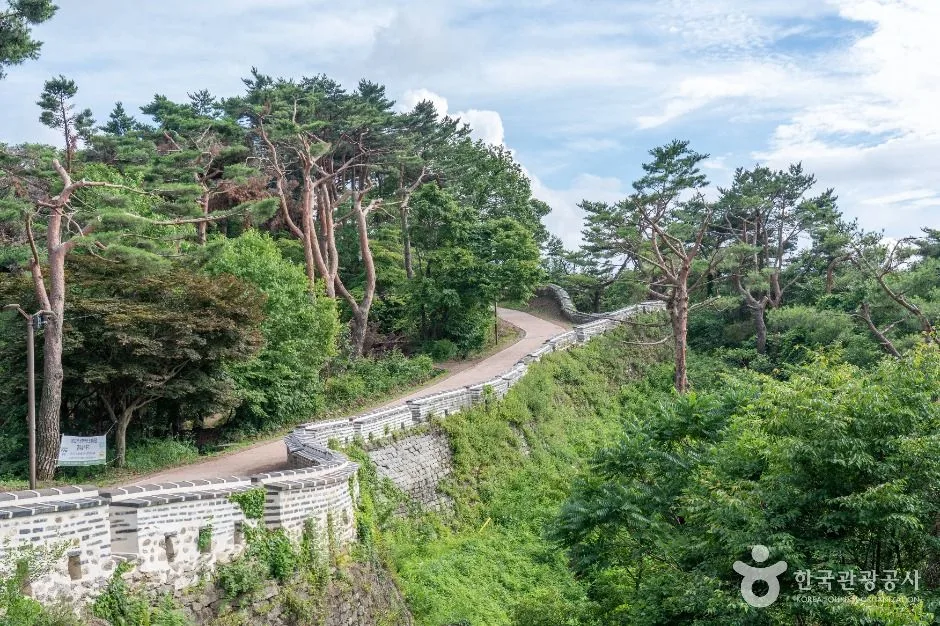
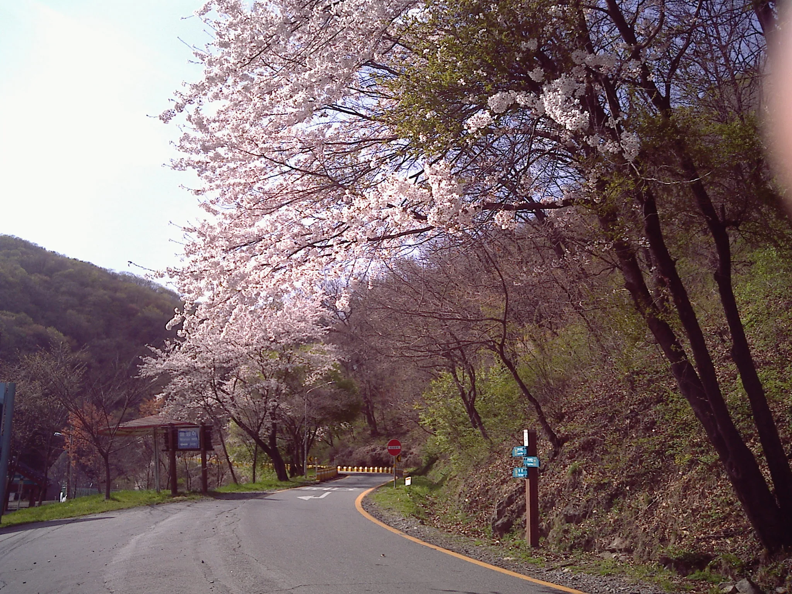
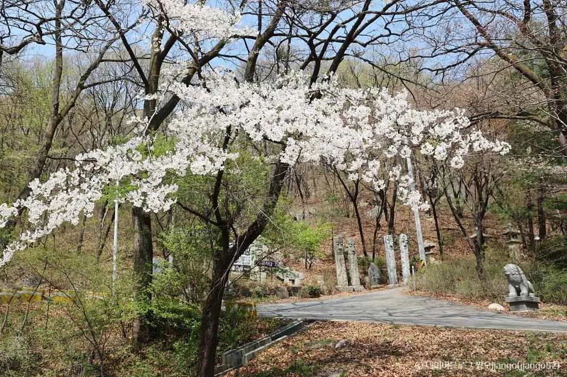
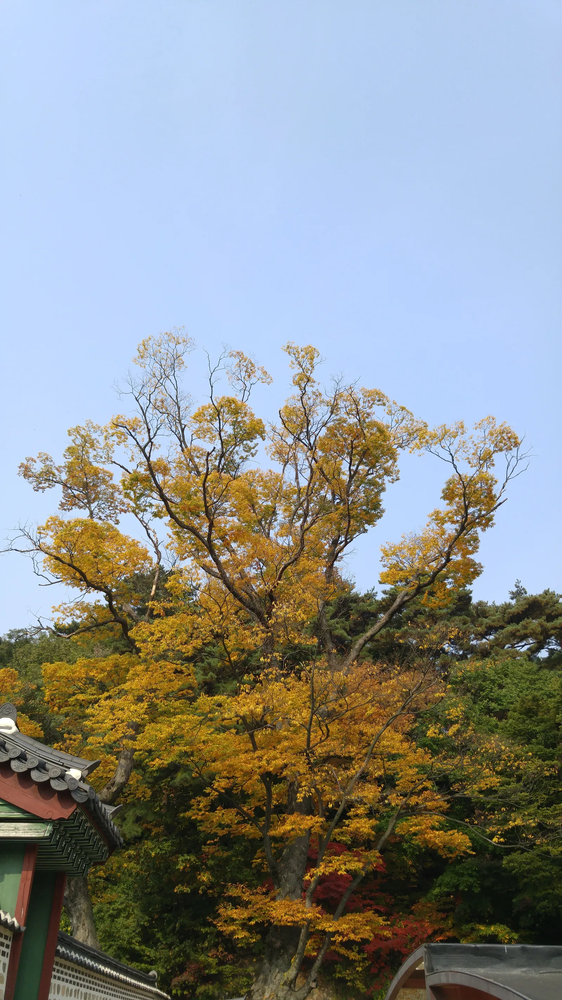
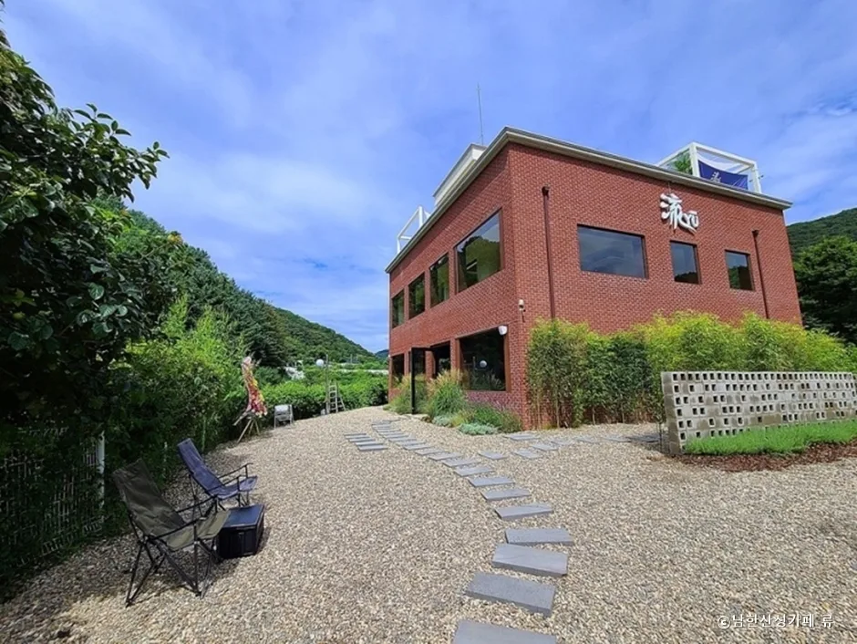
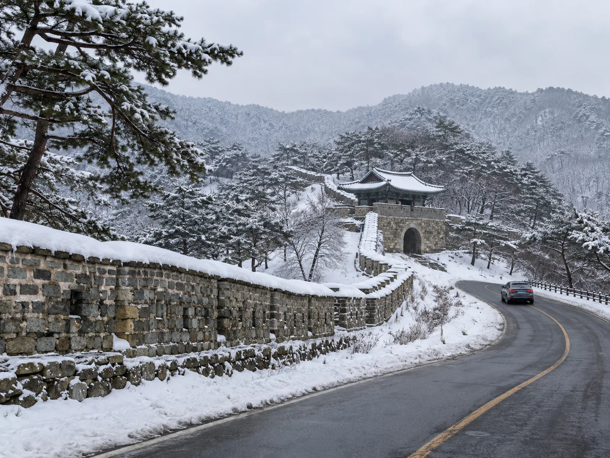
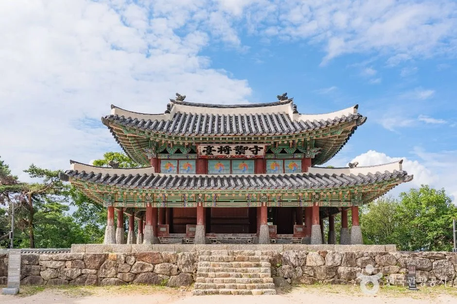

▲ 단풍철 남한산성 성곽과 그 아래를 지나는 도로. 성곽은 걷는 길이고, 차는 성곽 바깥 도로를 따라 돈다 사진=경기도남한산성세계유산센터
1. 로터리 하나, 성문 넷 — 남한산성의 길은 두 종류다
남한산성도립공원의 중심은 '남한산성 로터리'다. 8호선 산성역에서 남한산성 입구 삼거리까지 이어지는 약 13km 구간이 자동차로 오르는 진입로이고, 로터리에 닿으면 그다음부터는 성격이 갈린다. 로터리를 기점으로 북문·서문·수어장대·남문을 잇는 성곽 탐방로는 총 5개 코스(3~7.7km)로 나뉘는데, 전부 도보 전용이다. 즉 차로 갈 수 있는 곳은 로터리와 주차장까지이고, 성곽 자체는 걸어야 한다.

▲ 성곽을 따라 이어지는 탐방로. 소나무 숲길이라 차가 들어가지 못한다 사진=한국관광공사
2. 계절별 정보 한눈에 보기
남한산성은 사계절 모두 갈 만하지만, 시기마다 봐야 할 것과 챙겨야 할 것이 다르다. 표로 정리하면 이렇다.
| 계절 | 시기 | 명소 | 주차·비고 |
|---|---|---|---|
| 봄 | 4월 초~중순 | 남한산성로 벚꽃길(동문~남한산성면 행정복지센터, 약 8km), 남한산성~분원리 팔당호 드라이브 | 주말 오전 혼잡, 로터리 주차장 조기 만차 가능 |
| 여름 | 6~8월 | 성곽 그늘길, 계곡을 낀 카페거리 | 비 온 다음 날은 임도 낙석·미끄럼 주의 |
| 가을 | 10월 중순~11월 초 | 남문~수어장대 성곽 단풍, 행궁 단풍 | 평일 방문 권장, 맑은 날 색이 가장 선명 |
| 겨울 | 12~2월 | 눈 덮인 성곽길, 로터리 일대 설경 | 급경사·음지 구간 결빙 상시, 스노타이어·체인 필수 |
3. 봄 — 8km 벚꽃길, 그리고 팔당호까지
남한산성 벚꽃길은 1997년 산벚나무를 심으며 조성됐다. 남한산성 관리사무소 부근에서 남한산성면 행정복지센터까지 308번 국도를 따라 약 8km 구간에 벚꽃이 이어진다. 개화 시기는 4월 초에서 중순 사이로, 경기 지역 벚꽃의 일반적인 개화 흐름과 맞물린다. 로터리를 지나 동문 쪽 계곡을 따라가는 도로변과 산야에도 벚꽃이 함께 핀다.

▲ 벚꽃이 도로 위로 늘어진 남한산성 진입로. 4월 초~중순이 절정이다 사진=Wikimedia Commons (Cho's, CC BY-SA 3.0)
벚꽃을 다 보고도 여운이 남는다면 남한산성에서 분원리로 빠지는 드라이브 코스를 이어가는 것도 방법이다. 통행량이 적어 한적하고, 팔당호를 끼고 도는 구간에서는 물과 벚꽃을 함께 볼 수 있다. 광주시 남종면 귀여리~수청리를 잇는 337번 지방도 약 12km 구간에도 벚나무 3,000여 그루가 늘어서 있어, 남한산성과 묶어 반나절 코스로 짜기 좋다.

▲ 행궁 진입로의 벚꽃. 도보 구간이지만 로터리 주차장에서 5분 내외로 가깝다 사진=한국관광공사
4. 가을 — 성곽을 덮는 단풍, 그리고 카페거리
가을 남한산성의 색은 성곽 자체에서 나온다. 회색 돌담을 따라 참나무·단풍나무가 붉고 노랗게 물들면서, 성곽선과 단풍이 맞물리는 장면이 만들어진다. 절정은 대체로 10월 중순부터 11월 초순 사이로 본다. 남문에서 수어장대로 이어지는 구간, 그리고 행궁 주변 노거수가 특히 색이 짙다.

▲ 행궁 지붕 너머로 물든 단풍. 병자호란 당시 인조가 47일간 머물렀던 곳이다 사진=Wikimedia Commons (Jocelyndurrey, CC BY-SA 4.0)
📍 단풍 구경 후엔 카페거리로
로터리 주변에는 경성빵공장·스코그·카페 산 등 산을 낀 카페들이 모여 있다. 특히 통창 너머로 성곽과 산세가 보이는 곳이 많아, 단풍철에는 걷지 않고도 색을 즐길 수 있다. 계곡을 낀 자리가 많은 만큼 우천 시에는 진입로가 미끄러울 수 있다.

▲ 남한산성 로터리 인근의 카페. 산을 등지고 앉은 건물이 많다 사진=남한산성카페.류
5. 겨울 — 눈은 아름답지만, 도로는 별개다
남한산성은 산 전체가 공원이라 겨울철 도로 사정이 평지와 다르다. 로터리로 오르는 진입로와 성곽 주변 순환도로는 급경사·급커브 구간이 섞여 있고, 응달진 구간은 낮에도 눈이 잘 녹지 않는다. 눈이 온 다음 날 오전에는 결빙 구간이 그대로 남아 있는 경우가 많아, 스노타이어나 체인 없이는 오르막 중간에서 멈춰 서는 차가 자주 나온다.

▲ 실제 촬영 사진이 아닌, 겨울 남한산성 성곽 도로를 형상화한 AI 생성 예시 이미지다 이미지=AI 생성
✅ 겨울철 출발 전 확인할 것
· 스노타이어·체인 미리 장착 — 산길 특성상 후행 조치가 어렵다
· 오전보다는 기온이 오른 오후가 상대적으로 안전
· 로터리 주차장 만차 시 대체 주차 공간이 넉넉하지 않음을 감안
· 급한 오르막에서는 저단 기어로 속도를 유지
6. 놓치면 아쉬운 문화재, 그리고 주차 요금
남한산성은 2014년 유네스코 세계유산으로 등재된 성곽이자, 병자호란 당시 인조가 피신했던 역사의 현장이다. 성곽 안에는 유일하게 원형이 남은 장대인 수어장대, 그리고 국왕이 임시로 머물던 행궁이 핵심 볼거리로 꼽힌다. 행궁 입장료는 성인 2,000원, 청소년 1,000원이며, 경기도민은 신분증을 제시하면 무료다.

▲ 수어장대. 남한산성에 있던 5개 장대 중 유일하게 원형이 남아 있다 사진=한국관광공사
주차요금은 승용차 기준 평일 3,000원, 주말 5,000원이며, 20시부터 다음 날 9시까지는 무료, 30분 이내 출차 시에도 요금이 붙지 않는다. 국가유공자와 1~3급 등록장애인은 면제, 4~6급은 50% 감면된다. 자세한 주차 구역별 위치와 실시간 공지는 경기도남한산성세계유산센터 공식 안내에서 확인 가능하다.
📍 도보 코스가 부담스럽다면
전체 성곽을 다 돌 필요는 없다. 1코스(로터리~북문~서문~수어장대~남문~로터리, 3.8km, 약 1시간 20분)만 걸어도 핵심 명소는 대부분 지난다. 시간이 부족하면 로터리에서 수어장대까지만 왕복해도 볼 것은 충분하다.